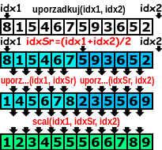

Porządkowanie przez scalanie
W poprzedniej lekcji pokazaliśmy jak scalić dwie uporządkowane tablice – napisaliśmy
w tym celu odpowiednią funkcję „scal”. W tej lekcji zajmiemy się wykorzystaniem
tej funkcji do posortowania dowolnego ciągu. W tej lekcji napiszemy funkcję
„void uporzadkuj(idx1, idx2)”, która będzie realizować algorytm porządkowania przez scalanie.

W osobnym oknie pojawiły się dwie tablice liczb: górna tablica służy tylko do wprowadzania
liczb i prezentuje stan tablicy przed uruchomieniem programu. Natomiast dolna tablica
jest po starcie programu wypełniona liczbami z górnej tablicy. Funkcja „uporzadkuj”
powinna posortować elementy w dolnej tablicy. Funkcja sortująca operując na tej
tablicy liczb może skorzystać tylko z jednej funkcji specjalnej: „void scal(idx1, idx2, idx3)”.
W poprzedniej lekcji funkcja scalała dwie osobne tablice, jednak w tej lekcji funkcja
„scal” działa trochę inaczej, w tej lekcji funkcja „scal” operuje na dwóch przyległych
fragmentach tablicy. Funkcja scal bierze dwa posortowane fragmenty tablicy.
Pierwszy fragment począwszy od indeksu
idx1 aż do indeksu
idx2-1,
drugi fragment począwszy od indeksu
idx2 aż do indeksu
idx3-1.
Po wywołaniu funkcji „scal” elementy we fragmencie tablicy od indeksu
idx1
do
idx3-1 indeksu są uporządkowane. Funkcja scalająca jest szerzej
omówiona w zakładce „funkcje specjalne”.

Zastanówmy się teraz jak można użyć funkcja „scal” do posortowania ciągów.
Funkcja „scal” potrzebuje dwóch posortowanych fragmentów tablicy, dlatego możemy
podzielić całą tablicę na dwa równe fragmenty (lub w miarę równe, gdy liczba
n jest nieparzysta). Wówczas jeśli posortujemy pierwszy i drugi fragment
z osobna będziemy mogli wykorzystać funkcję „scal”, którą uporządkuje całą tablicę liczb.
Oczywiście, pozostaje kwestia tego, jak posortować te dwa mniejsze ciągi.
Jednak po zastanowieniu sprawa powinna wydawać się prosta, gdyż wystarczy rekurencyjnie
wywołać funkcje porządkującą dla tych dwóch mniejszych fragmentów tablic. Zatem
kolejne wywołania funkcji, będą dzieliły tablicę na coraz mniejsze kawałki.
Warto jeszcze zastanowić się nad warunkiem stopu. Tablica złożona z jednego elementu
jest automatycznie posortowana, wobec tego jeśli wywołamy funkcję „uporzadkuj”
na jednoelementowym fragmencie tablicy wówczas powinniśmy od razu zakończyć działanie funkcji.
Rysunek po lewej stronie wizualizuje uwagi zamieszczone w tym akapicie.
Twoim zadaniem jest zaimplementować funkcję „void uporzadkuj(idx1, idx2)”.
Funkcja sortująca powinna działać tak, jak zostało powiedziane w poprzednim akapicie.
Funkcja „uporzadkuj” przyjmuje dwa indeksy: znacznik początku i końca tablicy.
Funkcja „main” będzie wywoływać tę funkcję z paramatrami 0 oraz n,
gdzie n oznacza wielkość tablicy.
W razie problemów z implementacją tej funkcji możesz skorzystać ze wskazówki
w postaci pseudokodu tego algorytmu. Po zakończeniu implementacji swojej funkcji
powinieneś porównać swoje rozwiązanie z rozwiązaniem wzorcowym, a następnie powinieneś
przeczytać podsumowanie.